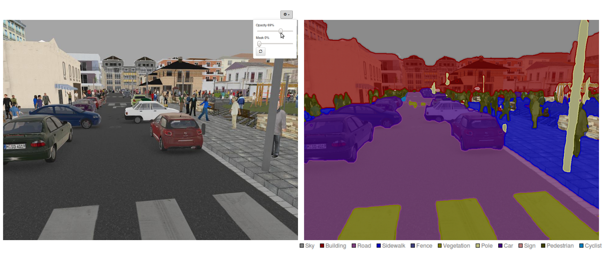
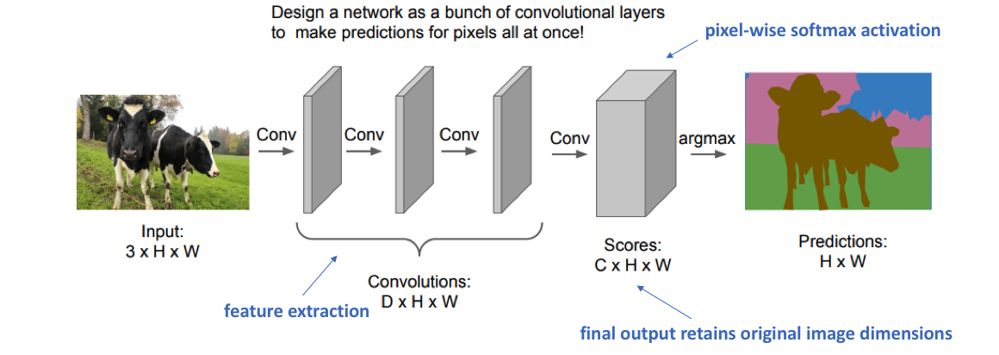
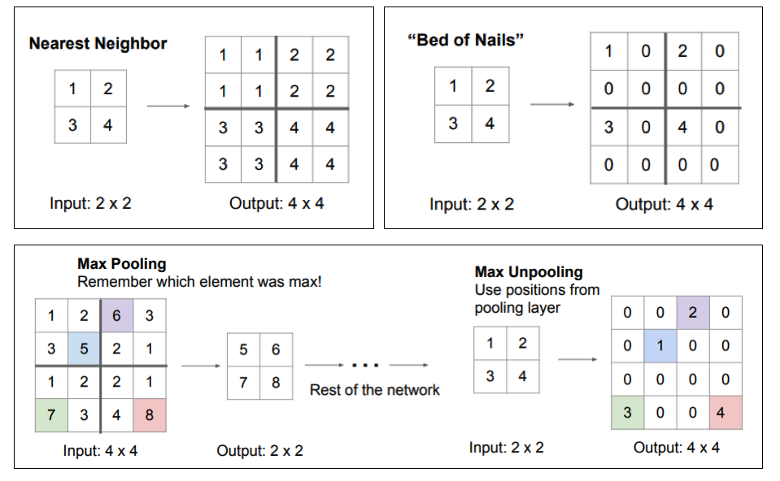

Semantic segmentation
Semantic segmentation
Semantic segmentation is a class of segmentation methods where you use knowledge about the identity of objects to partition the image pixel-per-pixel.

Classical segmentation methods only rely on the similarity between neighboring pixels, they do not use class information. The output of a semantic segmentation is another image, where each pixel represents the class.
The classes can be binary, for example foreground/background, person/not, etc. Semantic segmentation networks are used for example in Youtube stories to add virtual backgrounds (background matting).

Clothes can be segmented to allow for virtual try-ons.

There are many datasets freely available, but annotating such data is very painful, expensive and error-prone.
- PASCAL VOC 2012 Segmentation Competition
- COCO 2018 Stuff Segmentation Task
- BDD100K: A Large-scale Diverse Driving Video Database
- Cambridge-driving Labeled Video Database (CamVid)
- Cityscapes Dataset
- Mapillary Vistas Dataset
- ApolloScape Scene Parsing
- KITTI pixel-level semantic segmentation

Output encoding
Each pixel of the input image is associated to a label (as in classification).

A one-hot encoding of the segmented image is therefore a tensor:

Fully convolutional networks
A fully convolutional network only has convolutional layers and learns to predict the output tensor. The last layer has a pixel-wise softmax activation. We minimize the pixel-wise cross-entropy loss
\mathcal{L}(\theta) = \mathbb{E}_\mathcal{D} [- \sum_\text{pixels} \sum_\text{classes} t_i \, \log y_i]

Downside: the image size is preserved throughout the network: computationally expensive. It is therefore difficult to increase the number of features in each convolutional layer.
SegNet: segmentation network
SegNet (Badrinarayanan et al., 2016) has an encoder-decoder architecture, with max-pooling to decrease the spatial resolution while increasing the number of features. But what is the inverse of max-pooling? Upsampling operation.

Nearest neighbor and Bed of nails would just make random decisions for the upsampling. In SegNet, max-unpooling uses the information of the corresponding max-pooling layer in the encoder to place pixels adequately.

Another popular option in the followers of SegNet is the transposed convolution. The original feature map is upsampled by putting zeros between the values and a learned filter performs a regular convolution to produce an upsampled feature map. This works well when convolutions with stride are used in the encoder, but it is quite expensive computationally.


U-Net
The problem of SegNet is that small details (small scales) are lost because of the max-pooling. the segmentation is not precise. The solution proposed by U-Net (Ronneberger et al., 2015) is to add skip connections (as in ResNet) between different levels of the encoder-decoder. The final segmentation depends both on:
- large-scale information computed in the middle of the encoder-decoder.
- small-scale information processed in the early layers of the encoder.

Mask R-CNN
For many applications, segmenting the background is useless. A two-stage approach can save computations. Mask R-CNN (He et al., 2018) uses faster R-CNN to extract bounding boxes around interesting objects, followed by the prediction of a mask to segment the object.